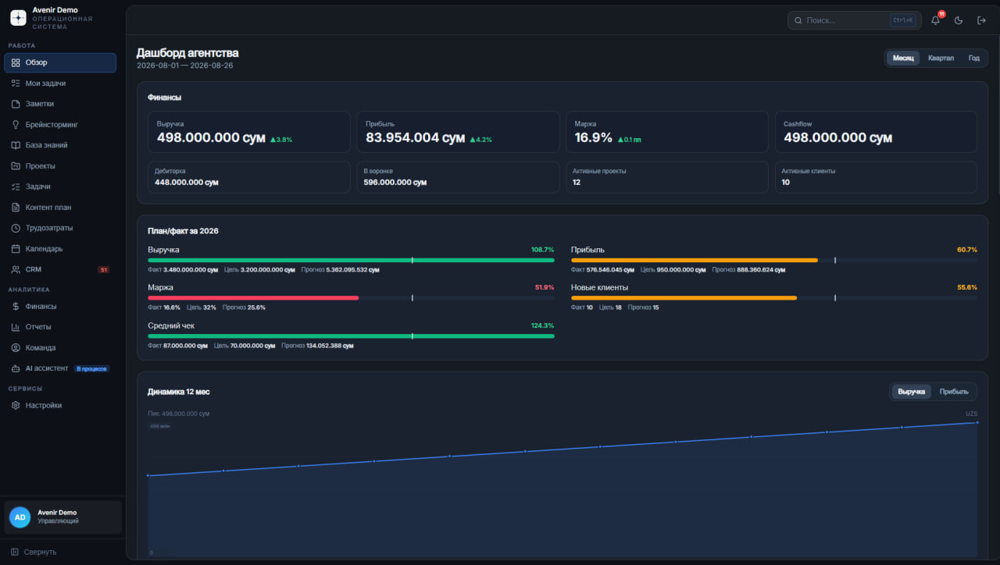
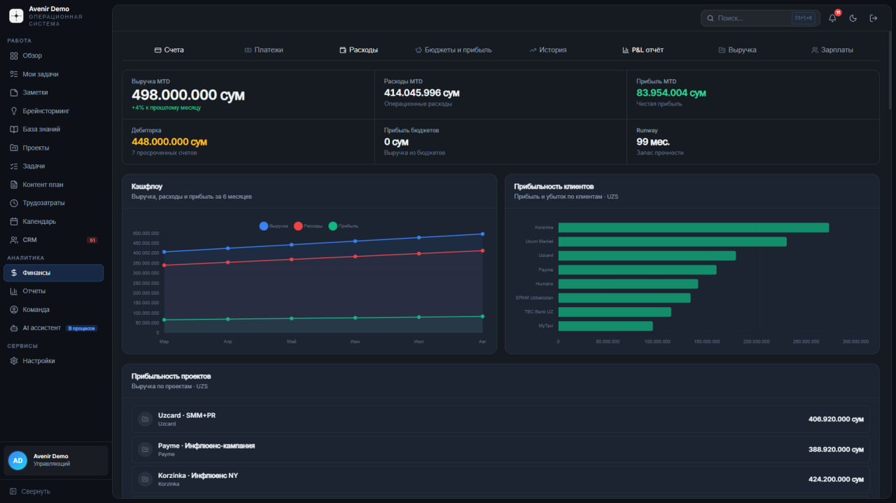
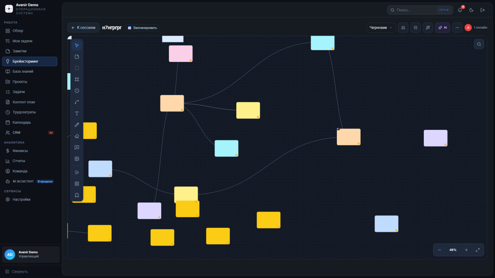
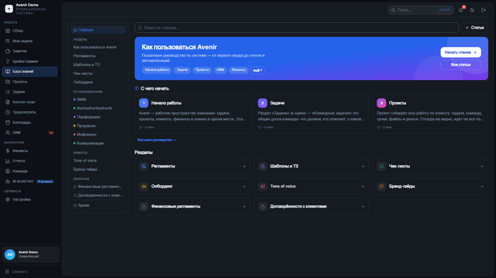
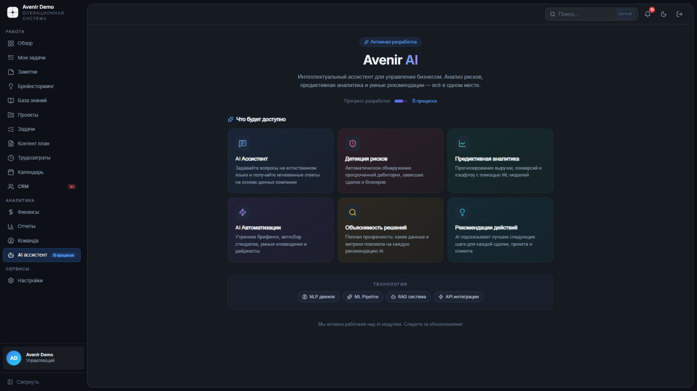

Bosh sahifa/Loyihalar/Avenir OS
Agentlikning butun ishi bitta maydonda
Avenir OS — marketing agentligi uchun operatsion tizim: g'oyadan hisob-fakturagacha. Loyihalar, vazifalar, kontent-reja, mehnat sarfi, moliya, jamoa va bilimlar bazasi — 16 ta bo'limda. Bu bizning o'z mahsulotimiz: har kuni o'zimiz ishlatamiz va shu sababli u haqiqiy jarayonga moslashgan.

Nimadan boshladik
Agentlik ishi o'nta joyga sochilgan
Vazifalar bitta trekkerda, byudjet jadvalda, mijoz bilan kelishuv chatda, kontent-reja alohida faylda. Har biri o'zicha to'g'ri ishlaydi, lekin ular orasida bog'lanish yo'q.
- Loyiha foydali bo'ldimi — buni oy tugagach bilib olasiz
- Xodim ketganda uning boshidagi bilim ham ketadi
- Bir xil ma'lumot uch marta qo'lda kiritiladi
- Rahbar holatni bilish uchun har biridan alohida so'raydi
G'oyadan hisob-fakturagacha bitta oqim
Har bir vazifa loyihaga, har bir loyiha mijoz va pulga bog'langan. Brifing breynstormingda tug'iladi, vazifaga aylanadi, kontent-rejaga tushadi, mehnat sarfi hisoblanadi va oxirida hisob-fakturaga chiqadi.
- Loyiha va mijoz foydasi real vaqtda ko'rinadi
- Bilimlar bazasi — reglament, shablon, chek-list va onbording
- Rollar bo'yicha kirish: yetti xil rol, har biriga o'z ko'rinishi
- Ma'lumot bir marta kiritiladi va hamma joyda ishlatiladi
Tizim ichida nima bor
Haqiqiy tizimning ekranlari. Raqamlar demo-hisobdan olingan.
Agentlik paneli
Rahbarning bosh ekrani. Yuqorida moliya: tushum, foyda, marja, kesh-flou, debitorka va voronkadagi summa. Pastda — 2026 uchun reja/fakt: har bir ko'rsatkich bo'yicha fakt, maqsad va prognoz bitta qatorda.
- Davr: oy, chorak yoki yil
- Reja bajarilishi rangli chiziq bilan — 108,7% yoki 51,9%
- 12 oylik dinamika: tushum va foyda alohida
Moliya va foydalilik
Hisob-fakturalar, to'lovlar, xarajatlar, byudjetlar, P&L, tushum va oyliklar — bitta bo'limda. Eng muhimi pastda: qaysi mijoz va qaysi loyiha qancha foyda keltirgani ro'yxat bo'lib turadi.
- MTD ko'rsatkichlari va o'tgan oyga nisbatan o'zgarish
- Debitorka muddati o'tgan hisoblar soni bilan
- Runway — kompaniya zaxirasi necha oyga yetadi
- 6 oylik kesh-flou: tushum, xarajat va foyda bitta grafikda

Breynstorming taxtasi
Cheksiz maydon: stikerlar, bog'lanishlar, chizish va matn. Sessiya qoralamadan boshlanadi, g'oyalar bir-biriga ulanadi, yakunda tanlangan g'oyalar to'g'ridan-to'g'ri vazifaga aylantiriladi.
- Jamoa birga ishlaydi — kim onlaynligi ko'rinib turadi
- Sessiyani rejalashtirish va qoralama holatida saqlash
- AI yordamchisi g'oyalarni guruhlashga yordam beradi

Bilimlar bazasi
Agentlikning yozilgan xotirasi. Yangi xodim birinchi kuni «Avenir'dan qanday foydalanish» qo'llanmasini ochadi va bosqichma-bosqich o'tadi — hech kimni chalg'itmasdan.
- Reglamentlar, shablon va TZ, chek-listlar, onbording
- Yo'nalishlar bo'yicha: SMM, perfomans, prodakshn, influens
- Mijoz uchun: tone of voice va brend-gaydlar
- Yopiq bo'limlar — moliyaviy reglament va kelishuvlar

Avenir AI — ishlab chiqilmoqda
Keyingi bosqich: tizim to'plagan ma'lumot ustida ishlaydigan yordamchi. Tabiiy tilda savol berasiz — javobni kompaniya ma'lumotidan oladi. Ochiq ko'rsatamiz, chunki mijozlarimiz nimani kutishini bilishlari kerak.
- Xavf detektsiyasi: muddati o'tgan debitorka, qotib qolgan bitim
- Prediktiv analitika: tushum va kesh-flou prognozi
- Qaror izohlanishi: AI qaysi raqamga tayanganini ko'rsatadi
- Texnologiyalar: NLP, ML Pipeline, RAG, API integratsiya

Nima o'zgardi
Loyiha va mijoz foydaliligi oy tugashini kutmaydi — panelda turadi.
Reglament va shablonlar yozilgan: yangi xodim birinchi kunidan ishga tushadi.
Vazifa, mehnat sarfi va hisob-faktura bitta ma'lumotdan o'sadi.
VAC.UZ
Keysni ochish → KonsaltingYakov and Partners
Keysni ochish → TradFi platformaDeFi Technologies
Keysni ochish → TurizmDagestantur
Keysni ochish →Shunday tizim sizga ham kerakmi?
Avenir OS ni ko'rsatamiz va sizning jarayoningizga qanday moslashini birga o'ylaymiz.